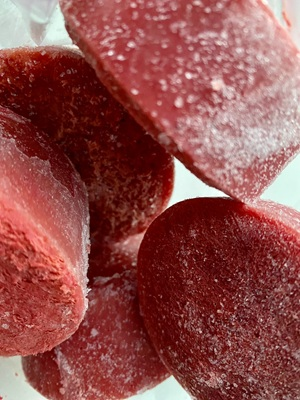
Roasted Tomato
Vegetarian
Roasted tomato with other veg, garlic, and cottage cheese.
.png "Caring Kitchen Logo")

Roasted tomato with other veg, garlic, and cottage cheese.
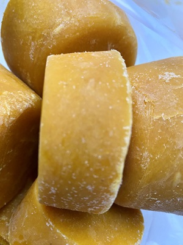
Roasted carrots with coconut milk, curry, onion, and garlic.
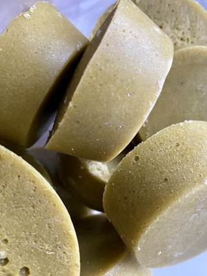
Cottage cheese packs this classic soup full of protein.
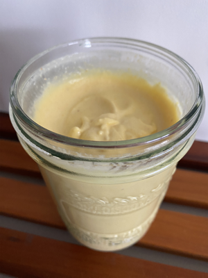
This mayo is healthier than anything you can buy.
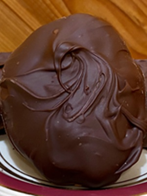
This healthy option is packed with protein and healthy fats.
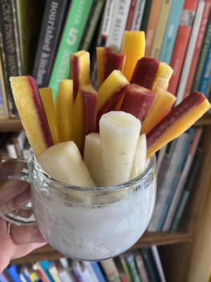
Pair with something crunchy to satisfy the craves.
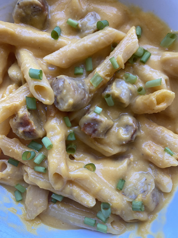
This is the most fun way (for all ages) to serve and eat squash!
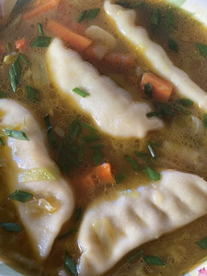
This is faster than take-out and saves money every time.
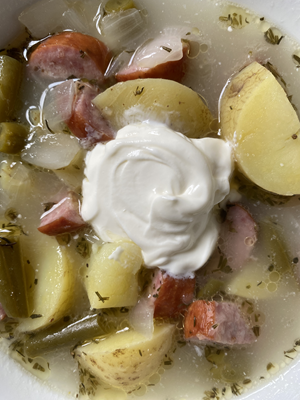
Green bean soup is a staple in some Mennonite kitchens.
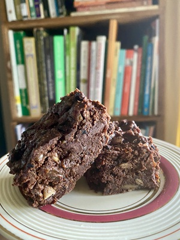
Perfect to sneak in some sweet potato and oatmeal!
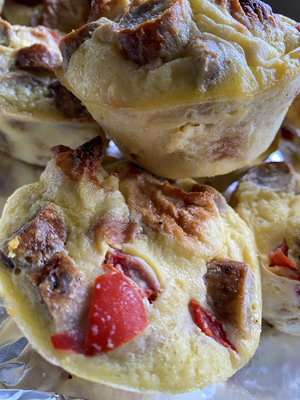
So easy & adjustable. They freeze and thaw well.
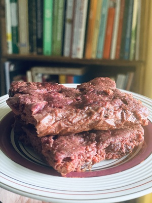
The pretty pink color comes from beets but no one would guess.
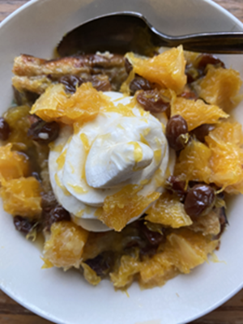
Special additions make this pretty and can work for breakfast or dessert.
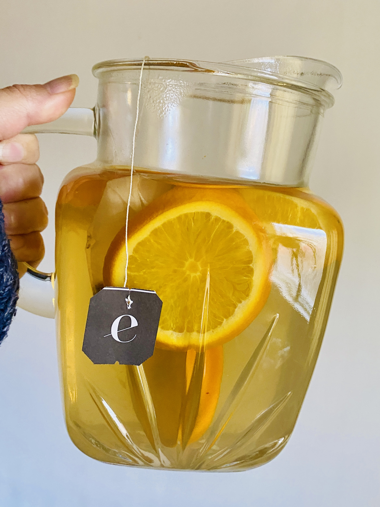
Makes everything feel festive and the whole house smells delicious.
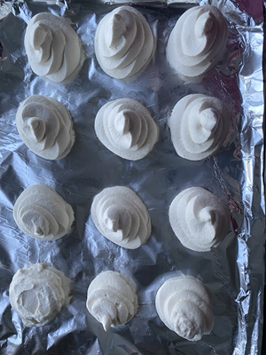
Way healthier than Cool Whip, easy to freeze and can top anything.